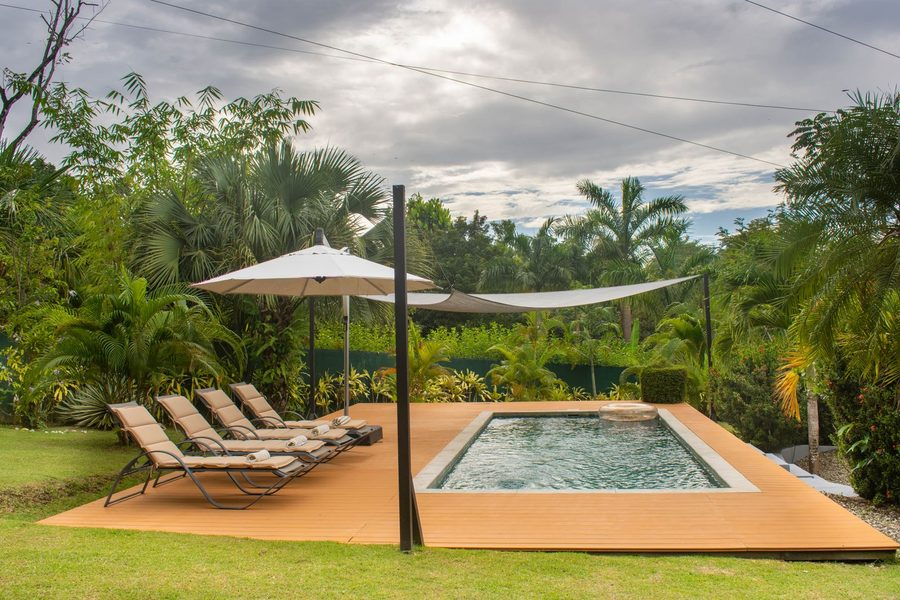
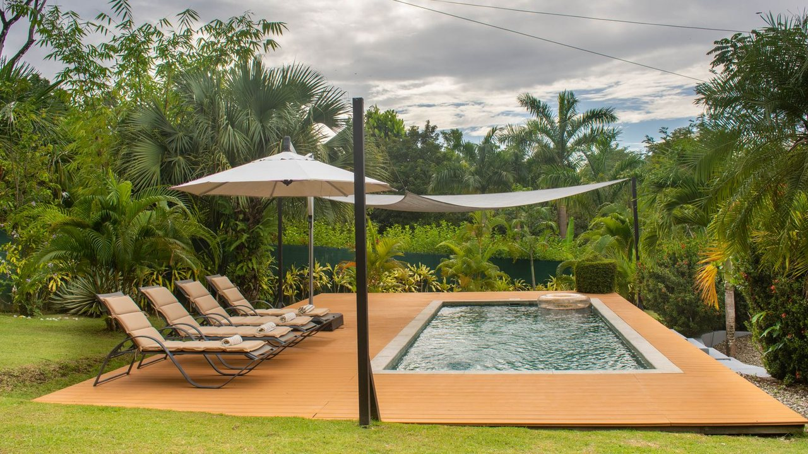
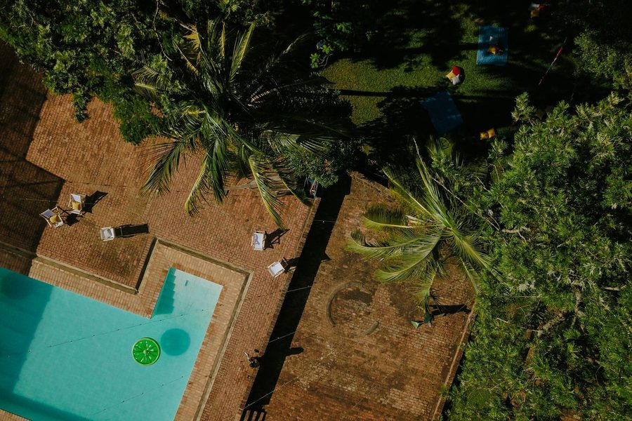
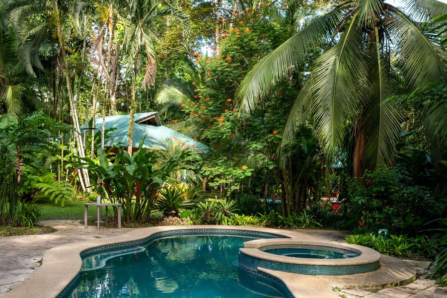
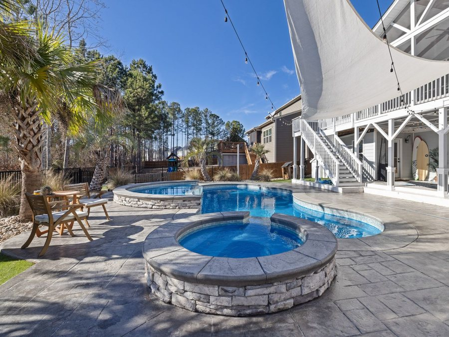
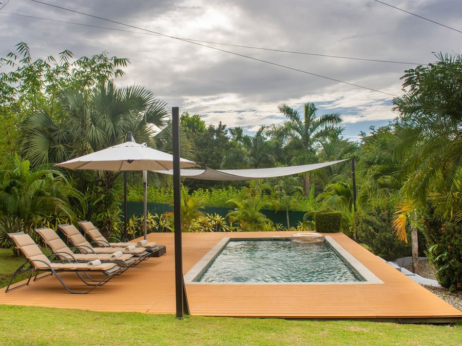
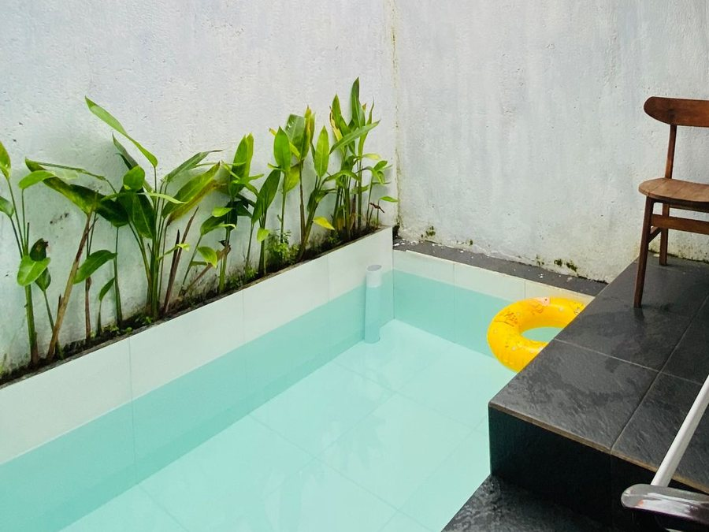
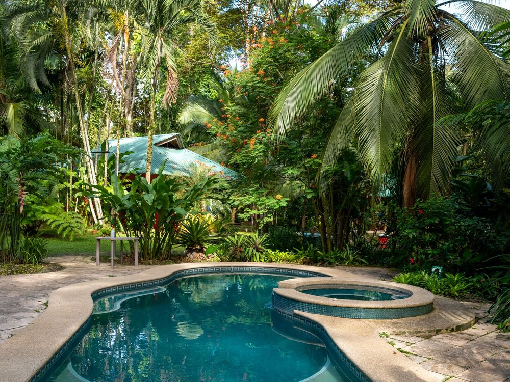

1
Tell us about the project
Choose your suburb, pool type, and anything you already know about budget, timing, access or slope.

Swimming pool builders in Townsville: tell us about the project and get a free quote from one local pool builder.
In short: Townsville Pool Builders is a free quote and referral service, not a pool construction company. Tell us your suburb and the pool you have in mind, and we pass it to one local pool builder, who quotes you directly.
Planning an inground pool in Annandale or Douglas, a family pool in Kirwan, or a plunge pool at Bushland Beach? Tell us your suburb, pool type and a little about the site, and we'll pass it to one local pool builder for a free, no-obligation quote.
Last updated: 23 November 2026
Tell us about the block and the pool you have in mind. We pass it to one local builder.
Photo: Alejandro Orozco / Pexels
Townsville Pool Builders is a free referral and quote service. We don't design, excavate or build pools. You tell us about the project, we pass your enquiry to one local pool builder who services your area, and they contact you directly.

Choose your suburb, pool type, and anything you already know about budget, timing, access or slope.

We send your details to one builder who services Townsville. We don't auction the job to a list of companies.

The builder follows up to discuss the site, what's included, and a written quote. You're under no obligation to go ahead.
Start with the type of pool, what usually affects the cost, and the Queensland fencing and approval rules that apply here.
Most new backyard pools around Townsville are concrete, fibreglass or a smaller plunge pool. You don't need to have decided before you enquire.

ConcreteCustom shapes, including freeform designs and raised spas. Often chosen when the site or design is not a standard shell.
FibreglassA pre-formed shell delivered and installed. Popular for family-sized rectangular or shaped backyard pools.
PlungeA smaller pool for tight or sloping blocks, or when you want water at hand without a full family length.We don't publish our own prices. A local builder has to quote your site. Cost guides from public industry sources, and the factors that usually move a quote, are in our pool cost guide.
Concrete, fibreglass or plunge; the length and depth; and whether fencing, paving, heating, lighting or a spa are in the price.
Slope, rock, soil, drainage, and how easily excavation equipment can reach the yard all change the earthworks.
A compliant barrier is required in Queensland, and building approval is part of a new pool. These are real cost items, not optional extras in the legal sense.
The wet season can affect excavation and construction timing. Coastal suburbs may need more thought about salt air on fittings and fences.
We take quote requests from across Townsville. The builder confirms whether they can service your street. Local guides:
The usual request: an inground concrete or fibreglass pool for a suburban yard, with a compliant fence and surrounds.
Smaller or inner-suburban lots, and some beachside streets, often suit a compact plunge pool rather than a full-length family pool.
Hills, valleys and tight side access are common in parts of Townsville. Mention slope and access on the form so the builder can allow for earthworks.
If you already have a pool or are buying a house with one, a builder or a licensed pool safety inspector can advise on options. We can still pass on a new-build or rebuild enquiry.
No. Townsville Pool Builders is a free referral and quote service. We don't design, excavate or build pools. We pass your enquiry to one local pool builder who services your area, and they contact you directly.
Fill in the form with your suburb, the pool type you have in mind, and your contact details. We send that to one local pool builder. They follow up about a site visit and a written quote. There's no charge to enquire and no obligation to go ahead.
It depends on the type, size, site, access, fencing and what's included. We don't publish our own prices. Public industry guides (linked in our pool cost guide) give national or Queensland ranges only. A local builder has to quote your block.
Concrete is built on site and can be custom shaped. Fibreglass is a pre-formed shell delivered and installed. A plunge pool is a smaller pool, in either construction, often used on tighter blocks. You can choose “Not sure” on the form. See our pool types guide.
Yes. The Queensland Government and the QBCC say a new swimming pool needs building development approval and must comply with the pool safety laws. In most cases the builder engages a private building certifier, who lodges documents with the local council. See our fencing and approvals guide.
The QBCC says the certifier who approved the pool must inspect and certify the pool fence before the pool is filled to a depth of 300 mm or more. A temporary fence can only be used in limited, certified circumstances.
Yes. All regulated pools must be registered with the QBCC. Registration is done through the QBCC pool register. The Queensland Government says you can be fined if the pool isn't registered.
A Form 23 pool safety certificate, issued only by a QBCC-licensed pool safety inspector, is required when you sell, buy or lease a property with a regulated pool. It is valid for two years for a non-shared pool and one year for a shared pool. A recent Form 17 from a building certifier can replace it in some cases.
Yes, we take quote requests from across Townsville and those suburbs, and from nearby areas. The local builder confirms whether they can service your street.
Yes. The QBCC recommends checking the pool builder's licence and licence history before you accept a quote or sign a contract. For domestic building work over $3,300 you also need a written contract and the cooling-off and deposit rules in the QBCC's “Build a pool” guidance.
It varies with the pool type, the site, approvals and weather, including the wet season in North Queensland. We don't publish a standard timeframe. Ask the builder when they quote, and what's assumed in that estimate.
No. The request is free. You're not obliged to accept the quote or to go ahead with a build.
Send a free quote request and we'll pass it to one local pool builder who services your area. There's no obligation to go ahead, and we don't build the pool ourselves.
